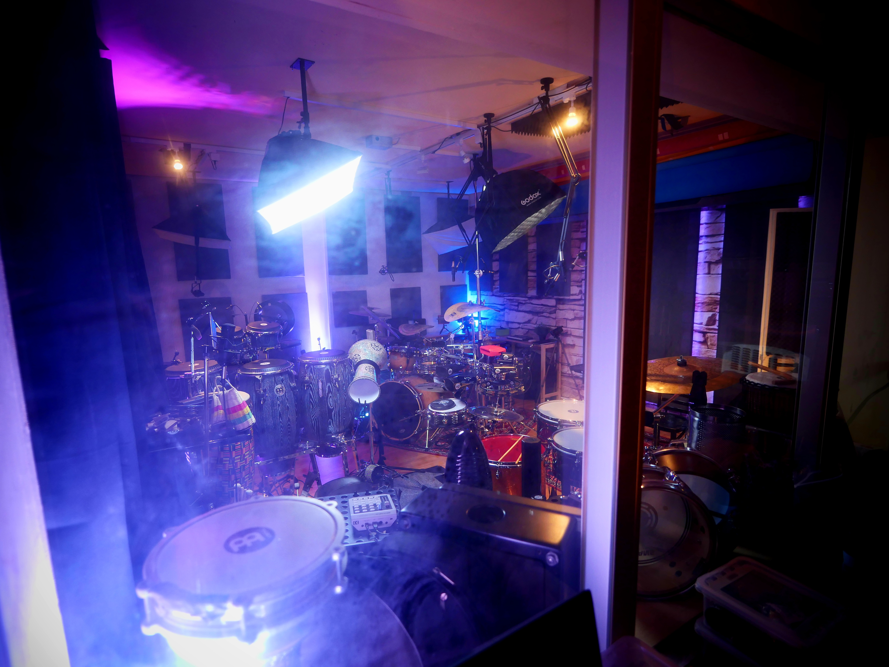
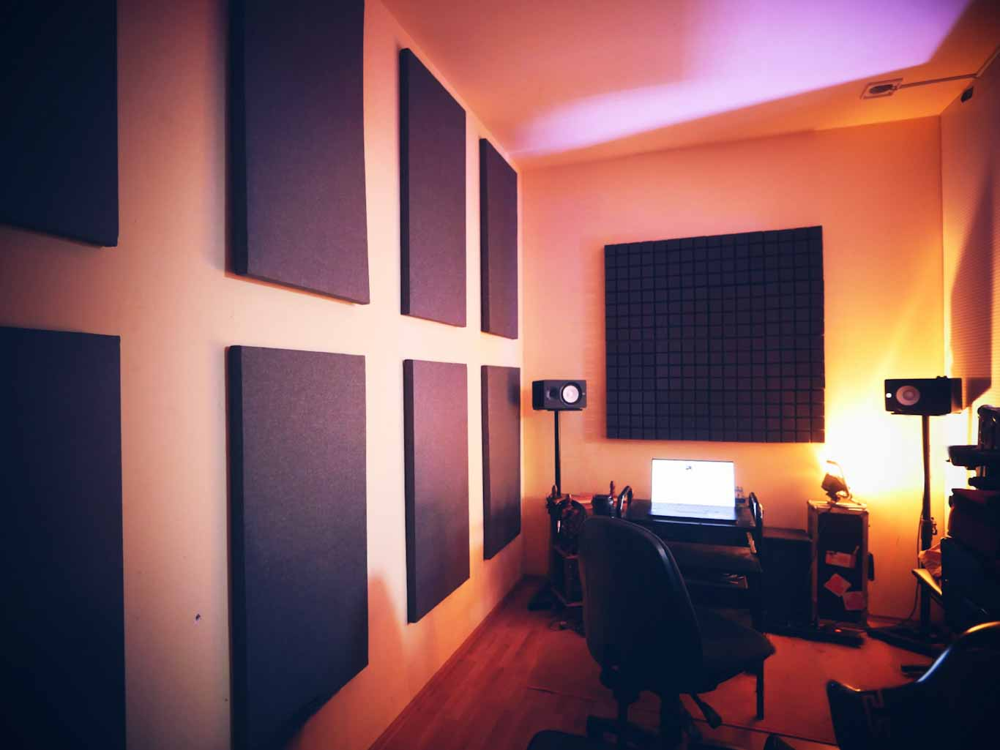
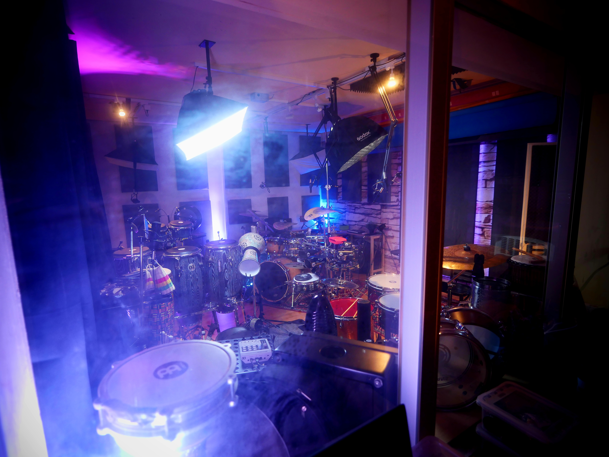
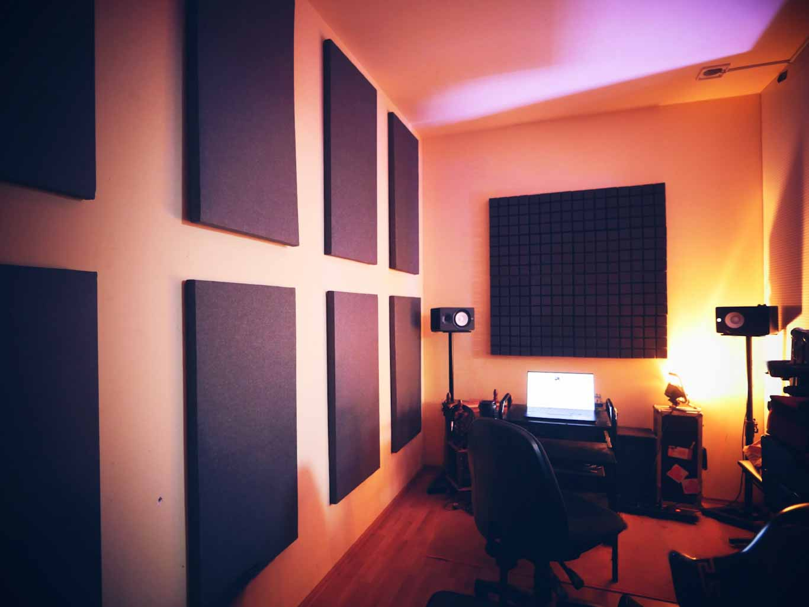

Das DrumHub
Ein hochmodernes Studio, spezialisiert auf Video- und Audioaufnahmen für Musiker. Perfekt für Drums, Percussion und mehr.
Jetzt mit 30% Einführungsrabatt!
Ein hochmodernes Studio, spezialisiert auf Video- und Audioaufnahmen für Musiker. Perfekt für Drums, Percussion und mehr.
Jetzt mit 30% Einführungsrabatt!


 




Entstehung und Philosophie:
Das Studio wurde während der Corona-Pandemie gegründet, um eine professionelle Umgebung für hochwertige Video- und Audioaufnahmen zu schaffen. Zusammen mit Santino Scavelli, dem Inhaber des Global Beat Studios, entstand ein Ort, der Musikern und angehenden Künstlern eine erschwingliche Möglichkeit bietet, sich selbst zu produzieren und zu vermarkten. Unsere Mission ist es, Künstler in einer Zeit zu unterstützen, in der Online-Präsenz unverzichtbar geworden ist.
Ausstattung:
Das Studio verfügt über einen großen Aufnahmeraum mit flexiblen Kamera- und Hintergrundoptionen. Es können bis zu sechs Kameras gleichzeitig genutzt werden, um unterschiedliche Perspektiven in 6K-Qualität festzuhalten. Der Regieraum bietet durch ein schallisoliertes Fenster klare Sicht auf den Aufnahmeraum, was eine optimale Kommunikation ermöglicht. Zusätzlich können bis zu 32 Spuren gleichzeitig aufgenommen werden, unterstützt durch hochwertige Röhrenvorverstärker.
Das Team:
Neben mir arbeitet ein ausgebildeter Techniker im Studio, um den reibungslosen Ablauf der Aufnahmen zu gewährleisten. Künstler können auch eigene Techniker mitbringen, um gemeinsam das Beste aus ihren Projekten herauszuholen.
Projekte und Erfolge:
Das Studio war maßgeblich an der Produktion der Serie "Monkey Beats" und zahlreichen Produktvideos für Meinl beteiligt. Zudem wurden hier über zehn Alben von Künstlern wie Anika Nilles und Pulse Project produziert.

Unser Studio bietet eine erstklassige technische Ausstattung, die sowohl für professionelle Musiker als auch für angehende Künstler ideal ist. Mit einer Vielzahl an hochwertigen Geräten für Audio- und Videoaufnahmen sorgen wir für beste Ergebnisse.
Für Videoaufnahmen bieten wir modernste Kameras und Linsen, die eine beeindruckende Bildqualität gewährleisten:
Unsere Audioausstattung umfasst erstklassige Preamps, Mikrofone und Interfaces, die höchsten Ansprüchen gerecht werden:
Unser Studio verfügt über einen großen Aufnahmeraum und einen schallgetrennten Regieraum mit direkter Sichtverbindung durch ein großes Fenster. Die Ausstattung ermöglicht 6K-Aufnahmen mit 8 verschiedenen Kamera-Perspektiven und flexiblen Hintergründen, darunter Greenscreen, farbige Studiohintergründe und ein Steinhintergrund.
Unser Studio bietet flexible Buchungsoptionen, bei denen ihr euer eigenes Team mitbringen könnt, oder unser erfahrenes Personal für die Steuerung von Audio- und Videoequipment in Anspruch nehmen könnt. Postproduktion für Audio- und Videobearbeitung kann optional dazugebucht werden.

Unser Studio bietet eine umfassende All-in-One-Lösung für Musiker und Produzenten, die hochwertige Audio- und Videoaufnahmen erstellen möchten. Mit modernster Technik und erfahrenen Fachleuten bieten wir alles, was Sie für professionelle Produktionen benötigen.